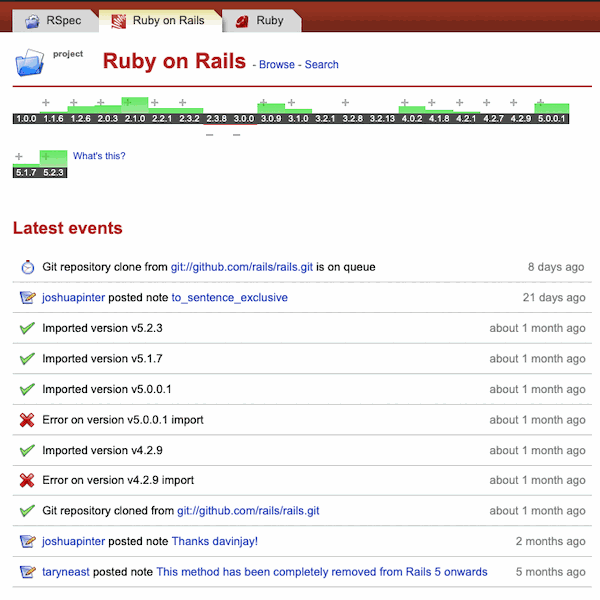

1. つかみ
APIdock を覚えていますか

apidock.com/rails(2000年代〜)
1
バージョンバー
Rails の版ごとに diff 量が
+
/ − で見える
2
ソースのインライン表示
メソッドの実装コードをドキュメント内で読める(今も健在)
公式ドキュメントを非公式に成形し、
公式がやらない付加価値を足すサービス
+
+
+
+
APIdock → ECMAScript spec
2 / 12